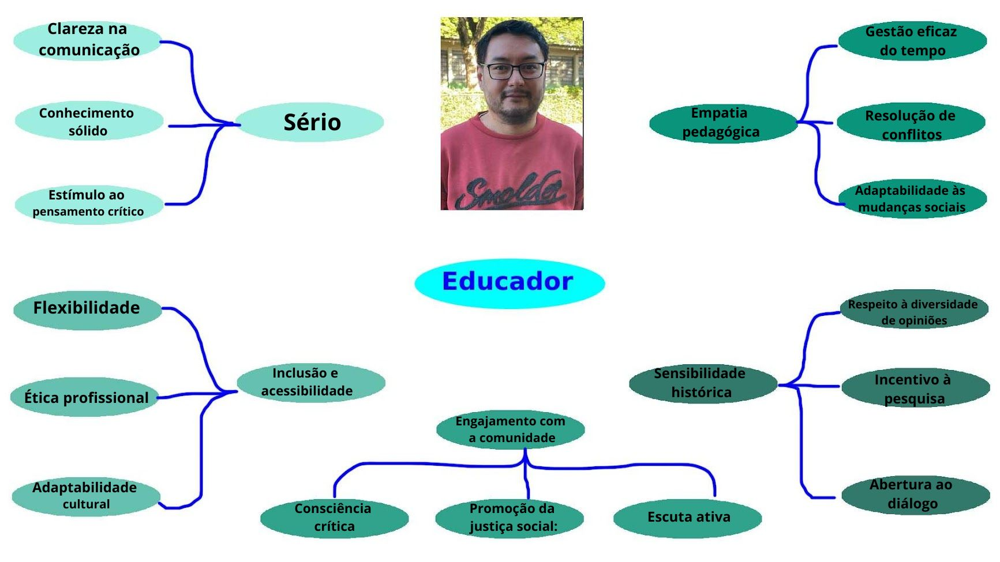
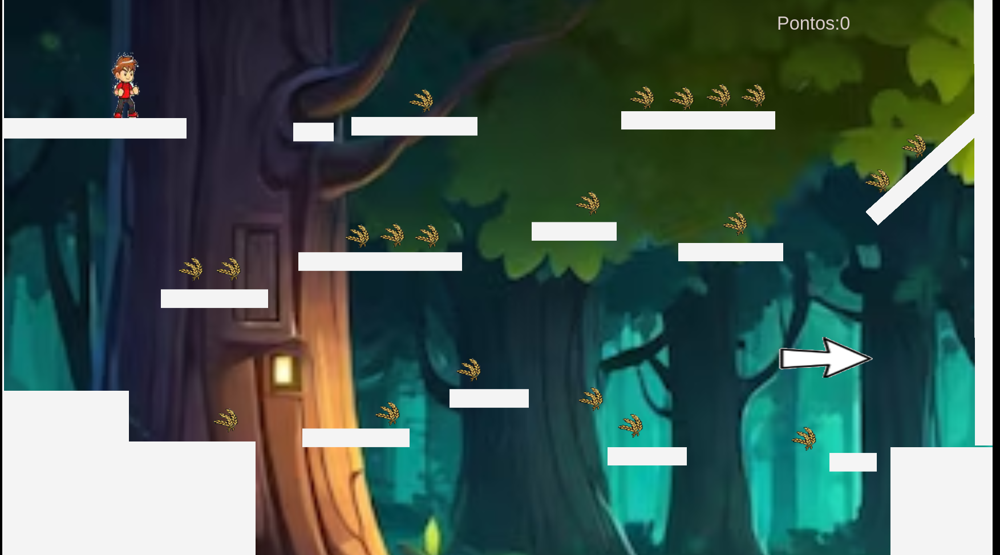

Formação Acadêmica: Graduado em ciências sociais (bacharel e licenciatura), mestrado em ciências sociais, graduado em letras e cursando direito(4°ano).
Do Que trabalhou: trabalhou na UEM no projeto extensão (durante 3 anos) e profesor.


Clique na imagem acima para jogar um produzido especialmente para o professor Anderson!
Querido Professor Anderson,
Caro professor Anderson, venho por meio desta mensagem destacar o quanto lhe acho incrível. O senhor ensina os seus alunos com uma confiança e sabedoria admirável, gosto também do fato do senhor utilizar exemplos do nosso cotidiano para explicar a matéria, acho incrível também o fato do senhor fazer faculdade de direito e conseguir equilibrar isso com a rotina didática do colégio. espero que o continue sendo esse excelente professor e desejo sucesso na faculdade.
Atenciosamente, Geovanna 3ºTDS
Professor Anderson, gostaria de compartilhar como sua matéria de sociologia tem sido enriquecedora para mim. Através das suas aulas, aprendi a ver o mundo de uma perspectiva mais ampla e crítica. Suas explicações claras e exemplos envolventes têm tornado os conceitos complexos da sociologia acessíveis e fascinantes. Cada discussão em sala de aula me fez refletir profundamente sobre as dinâmicas sociais, cultura e poder. Obrigado por seu compromisso em nos ensinar não apenas o conteúdo, mas também a importância de questionar, analisar e compreender as complexidades do mundo ao nosso redor.
Ass: Maêndra Araújo 3°TDS
Querido Professor Anderson,
Queria te agradecer de coração por tudo que você fez por nós neste semestre. Suas aulas foram demais e aprendi muito com você. Sua paciência e jeito de ensinar fizeram toda diferença pra mim. Valeu mesmo por tudo!
Abraços,
Henrique, Turma 2 Tds
“Professor, mais do que uma nobre profissão, ensinar é um dom e uma arte só ao alcance dos grandes mestres como você!.”
Heloisa Vitória de Oliveira - 4º INFO
 Clique na imagem acima para dar sua opinião sobre nosso projeto!
Clique na imagem acima para dar sua opinião sobre nosso projeto!